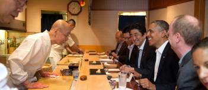
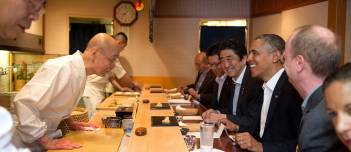

Quienes somos
Somos una de las franquicias más conocidas a nivel nacional, a lo largo de los años en la historia del sushi Gourmet. Llevamos más de 50 años sirviendo sushi tradicional, siendo así los primeros en traer esta deliciosa y variada opción culinaria venida desde Japón a España, no queriendo decir que con el paso del tiempo nos hemos quedado estancados, ya que cada día adquirimos nuevos conocimientos, contando así con una amplia variación de productos. Todos estos años hemos logrado abrir más de 30 restaurantes en el país y conseguir el honorifico clasificatorio de 5 tenedores en cada uno de ellos.